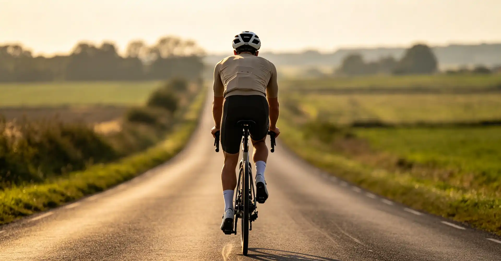

Walking into a bike shop for your first mountain bike is overwhelming. You are greeted by a wall of bikes ranging from $600 to $10,000, with terms like "head tube angle," "boost spacing," and "progressive kinematics" being thrown at you. The biggest decision you will face is whether to buy a hardtail (front suspension only) or a full-suspension bike. This article cuts through the marketing jargon to help you make the right choice based on your budget, the trails you will actually ride, and your long-term goals as a rider.
My First Bike: A $650 Hardtail That Taught Me Everything
In 2018, I bought a Trek Marlin 7 for $650 at a local bike shop in Boulder, Colorado. It had a 100mm RockShox Judy fork, Shimano Deore 2x10 drivetrain, and 29-inch wheels. I rode that bike on everything—the smooth flow trails at Betasso Preserve, the rocky technical climbs at Heil Valley Ranch, and even a few ill-advised attempts at the black-diamond sections of Walker Ranch. I crashed a lot. I learned more. That hardtail taught me fundamental skills that I see riders on $5,000 full-suspension bikes missing entirely: how to pick a line, how to use my legs as suspension, and how to carry momentum through rough sections.
Two years later, I upgraded to a Santa Cruz Hightower ($4,200) and noticed two things immediately: I was faster on descents, but I had also developed bad habits. The full-suspension bike masked my poor line choices, and I found myself plowing through rock gardens instead of reading them. I am not saying you should start on a hardtail—but I am saying that the skills you develop on one are permanent.
Hardtail vs Full Suspension: The Core Comparison
| Factor | Hardtail | Full Suspension |
|---|---|---|
| Entry Price (Quality) | $800–$ | $1,800–$ |
| Weight (Trail Bike) | 28–32 lbs | 30–36 lbs |
| Maintenance Cost/Year | $80–$ (fork service) | $250–$ (fork + shock service, pivot bearings) |
| Climbing Efficiency | Excellent—no pedal bob | Good to excellent (with lockout) |
| Descending Capability | Limited—rear wheel hangs up | Excellent—rear wheel tracks ground |
| Skill Development | Forces good line choice and technique | Can mask poor technique |
| Comfort (Long Rides) | Moderate—more fatigue on rough terrain | High—less fatigue, more traction |
| Durability | Very durable, fewer moving parts | More parts to wear or break |
When a Hardtail Is the Right Choice
If your budget is under $1,500, buy a hardtail. At this price point, any full-suspension bike will have such low-quality components that it will actually make riding less enjoyable. A $1,200 hardtail like the Specialized Rockhopper Elite or the Canyon Stoic 2 will have a decent air fork, hydraulic disc brakes, and a 1x drivetrain—everything you need to start riding real trails.
Hardtails also excel on flow trails and smooth singletrack. If your local trails are mostly green and blue—think Valmont Bike Park in Boulder or the Duthie Hill trails in Issaquah, Washington—a hardtail is more than capable. You will climb faster than your full-suspension friends, and the bike will feel snappier and more playful. The lack of rear suspension also means zero energy is lost to pedal bob, making every watt you produce count.
For bikepacking and long-distance trail riding, hardtails have a significant advantage: the front triangle is open for a large frame bag, and there are no shock linkages to interfere with bag mounting. The Kona Unit X ($1,600) is a steel hardtail purpose-built for bikepacking that has become a cult favorite among riders tackling the Colorado Trail and the Great Divide Mountain Bike Route.
When a Full-Suspension Bike Is Worth the Investment
If your budget is $2,000 or more and you plan to ride rocky, technical trails regularly, a full-suspension bike is the better choice. The entry point for a quality full-suspension bike is around $2,000–$ for models like the Marin Rift Zone 1 or the Polygon Siskiu T7. These bikes come with components that will not hold you back: 130–150mm of travel, hydraulic disc brakes, dropper posts, and 1x12 drivetrains.
Full suspension truly shines on rough terrain. When you ride through a rock garden, the rear shock keeps the rear tire in contact with the ground, maintaining traction and control. On a hardtail, the rear wheel will bounce off rocks and skip sideways, which is both slower and more dangerous. If you live near trails like the Whole Enchilada in Moab, the Wasatch Crest Trail in Utah, or the North Shore trails in British Columbia, a full-suspension bike is not just nice to have—it is practically necessary.
The comfort factor matters too. A 2024 study by the University of British Columbia's School of Kinesiology found that riders on full-suspension bikes experienced 30% less lower-back fatigue over a two-hour ride compared to hardtail riders on the same trail. If you are over 35 or have any history of back issues, this difference alone may justify the extra cost.
Specific Bike Recommendations by Budget
| Budget | Hardtail Recommendation | Full-Suspension Recommendation |
|---|---|---|
| $600–$ | Trek Marlin 6 ($750), Giant Talon 1 ($800) | Not recommended at this price |
| $900–$ | Specialized Rockhopper Elite ($1,200), Canyon Stoic 3 ($1,300) | Polygon Siskiu D5 ($1,200)—entry-level FS |
| $1,500–$ | Commencal Meta HT AM ($1,800), Nukeproof Scout 290 ($2,000) | Marin Rift Zone 2 ($2,200), Polygon Siskiu T8 ($2,400) |
| $2,500–$ | Santa Cruz Chameleon ($2,800) | Ibis Ripmo AF ($3,000), YT Jeffsy Core 2 ($3,000) |
| $3,500+ | Specialized Fuse Expert ($3,500) | Santa Cruz Hightower ($4,200), Yeti SB140 ($6,000+) |
Key Components to Prioritize in Your Budget
Regardless of which bike type you choose, certain components matter more than others. A dropper post is the single most transformative upgrade you can make—it allows you to lower your saddle on descents with the push of a lever, which dramatically improves your descending confidence. If your bike does not come with one, budget an additional $200 for a PNW Components Rainier or a OneUp V2 dropper post.
Hydraulic disc brakes are non-negotiable. Mechanical disc brakes require constant adjustment and offer less stopping power. At minimum, look for Shimano MT200 or SRAM Level brakes. The drivetrain should be 1x (single front chainring) with a wide-range cassette—a 10-51t or 11-50t cassette paired with a 30t or 32t chainring will handle any climb you encounter. Shimano Deore M6100 (12-speed) is the current sweet spot for value and performance.
The fork is the most expensive component on any mountain bike, and upgrading it later is costly. On a hardtail, look for an air-sprung fork (not coil) with at least 120mm of travel. On a full-suspension bike, you want a fork with 34–26mm stanchions for trail riding—the RockShox Pike or Fox 34 Float are excellent benchmarks. Avoid SR Suntour's low-end coil forks (XCT, XCM) entirely; they are heavy, undamped, and will make your bike ride like a pogo stick.
Who This Is For (And Who It's Not)
Best for: First-time mountain bike buyers who are unsure whether to spend $800 or $3,000. Riders who have been on a borrowed or rental bike and are ready to purchase their own. Anyone who is overwhelmed by the options and wants a clear, data-driven recommendation.
Not ideal for: Experienced riders who already own multiple bikes and are looking for a niche addition (downhill, dirt jumper, fat bike). Competitive cross-country racers should be looking at specialized race hardtails or short-travel full-suspension race bikes, which are a different category entirely.